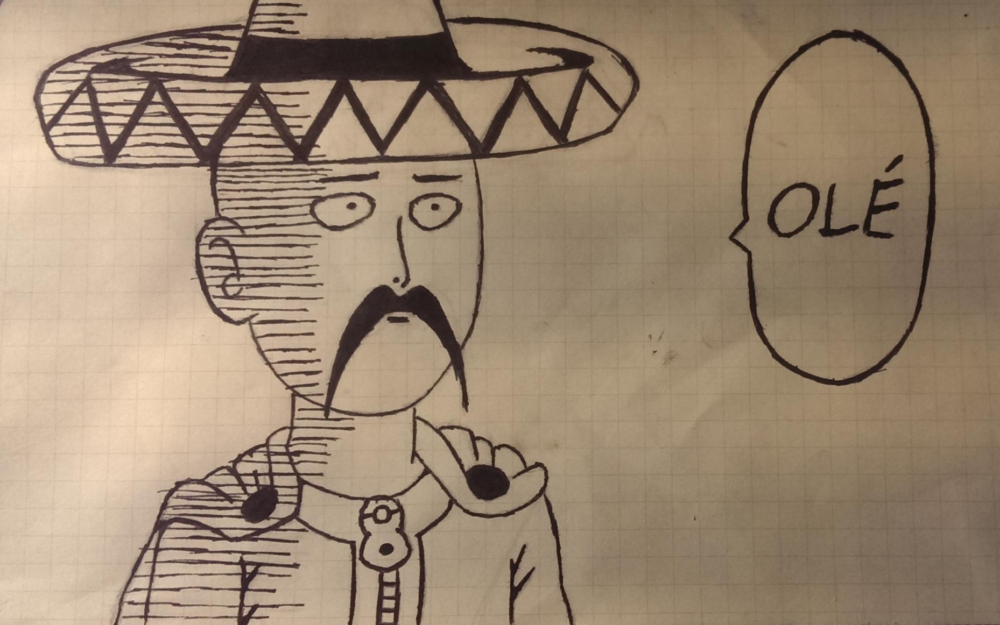
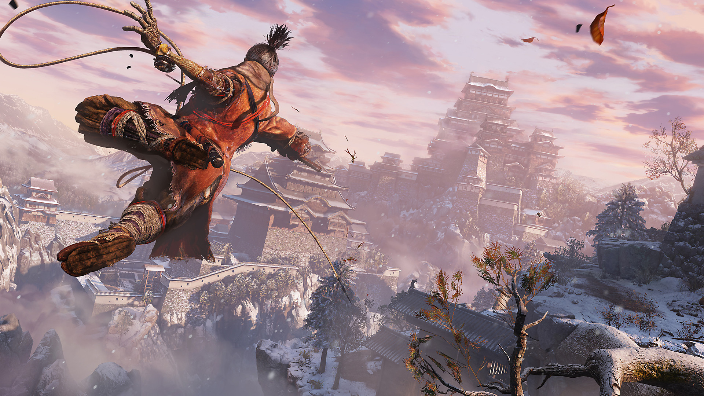

I was born on March 12, 2003 on Oahu, Hawaii. I have 1 sibling, which is my younger sister. For Elementary, I attended Holomua Elementary school. After elementary, I attended Ilima Elementary for Middle school. Currently, I am a junior at James Campbell Highschool.
If you asked me what is my favorite anime/manga, I honestly wouldn't be able to answer. Over the years I have seen and read some REALLY good anime and manga. But I've seen so many I honestly don't have a favorite. That or I just forget what my favorite was, if that makes any sense. Looking at my manga app, it says that I have 623 manga, and to be honest I think I have only read roughly 100 of them. I should really stop adding Manga before actually finishing them. Anime and Japanese culture always have fascinated me, so it always has been a bucketlist thing to go to Japan and experience things firsthand. Also, who doesn't like watching a good show?.
Traveling has always interested me in my life, despite living on a island my entire life. There are so many places I've always longed to go too, places like Japan, South Korea, and Germany just to name a few. I just always wanted to see the world outside the island I live on right now. I always wanted to experience something I hadn't experienced before.
Video Games and music are basically a staple hobby to everyone, mostly for the same reason, so there really is no reason to go more in depth about this topic. But just to name a few games I'm currently playing right now, the games im playing are things like Rainbow Six: Siege, maybe a little COD, and others. A game I'm really enjoying right now is Sekiro: Shadows Die Twice. It is a game made by From Software, who are known for their ludicrously hard Dark Souls Series. This game is just as hard, maybe even harder, but is soo much fun, especially when you play as a shinobi fighting samurai and monsters.
